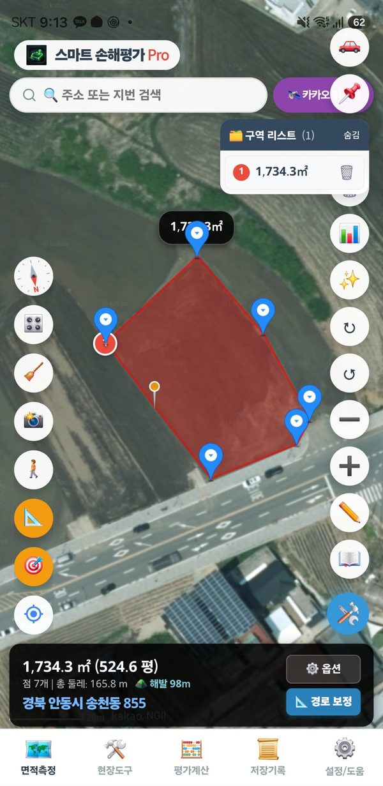

Edição de pontos
Muda o formato de uma área desenhada. Use quando um trajeto a pé deu saltos ou para ajustar um limite à lavoura real. Pro
Começar e terminar
- Começar: toque em «🛠️» no canto inferior direito → «✂️ Edição de pontos». Cada ponto ganha um pino e no topo aparecem o número e a área de cada área.
- Terminar: toque em «Terminar edição» no painel de ajuste fino ou toque de novo em «✂️ Edição de pontos».
Mover um ponto
- Segure um pino e arraste até o novo lugar. A área é recalculada na hora.
- O ponto movido fica selecionado (laranja) e aparecem à direita os botões de ajuste fino.
- Cada toque na seta (▲▼◀▶) move cerca de 10 cm; segure para continuar movendo. Um empurrão leve no joystick move devagar e um completo, rápido.
Adicionar um ponto
Toque sobre uma linha da borda e aparece um ponto ali. O ponto novo fica selecionado, então você pode arrastá-lo ou ajustá-lo logo.
Tocar um pouco longe da linha só mostra um aviso. Dê zoom para acertar a linha. Não é adicionado ponto colado a outro já existente.

Captura de tela
O pino laranja é o ponto recém-adicionado (versão coreana)
Apagar um ponto
Toque rapidamente em um pino e aparece a janela «Apagar este ponto?». Toque em OK para apagar.
Um toque leve abre a janela de exclusão. Toque em Cancelar se não quiser apagar. Para só selecionar um ponto, arraste-o um pouco mais.
Se errar
«↺ Desfazer» volta um passo. Mover, adicionar e apagar podem ser desfeitos.